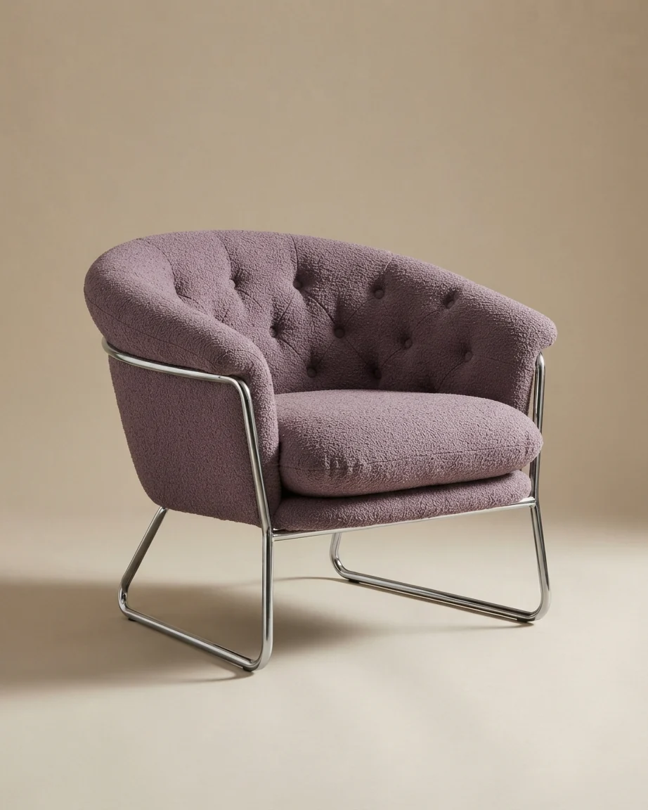

Серия Dimora · Для дома
Hearth
Кресло для отдыха ручной работы
Кресло для чтения: стёганая округлая спинка обнимает со всех сторон, глубокое мягкое сиденье. Основание — одна хромированная труба, которая образует полозья и поднимается в подлокотники.
Тканьот 26 000 ₽
Выбран цвет: Сиреневое букле
- Размеры (Ш × Г × В)
- 800 × 780 × 760 мм
- Высота сиденья
- 420 мм
- Каркас
- Металл
- Обивка
- Сиреневое букле, Молочное букле, Тёмно-синее букле. Возможен свой материал
- Ткани
- Коллекции Noble, Fiori, Bohemia, Rio
- Гарантия
- 12 месяцев, ГОСТ 16371-2014
- Производство
- Фабрика полного цикла ГК «Фабрикант»
- Доставка
- По России и СНГ
Изготавливаем под ваш проект: точные размеры, обивку и стоимость фиксируем в персональном расчёте.
 Nook
Nook